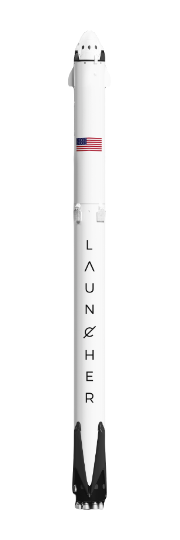

Stork
Stork
Пусковая установка "Stork" - самая мощная ракета в мире. Обладая способностью выводить на орбиту почти 64 тонны (141000 фунтов) - масса больше, чем у лайнера 737, загруженного пассажирами, экипажем, багажом и топливом - Launcher Stork может поднять полезную нагрузку более чем в два раза, чем следующий ближайший оперативный корабль Delta IV. Launcher Stork опирается на проверенное наследие и надежность Launcher Sparrow.
Его первая ступень состоит из трех ядер Launcher Sparrow с девятью двигателями, 27 двигателей Merlin которых вместе создают более 5 миллионов фунтов тяги при взлете, что соответствует примерно восемнадцати самолетам 747. Только лунная ракета Сатурн V, последний раз вылетевшая в 1973 году, доставила на орбиту больше полезной нагрузки. Пусковая установка Stork с самого начала была разработана для доставки людей в космос и восстанавливает возможность полетов с экипажем на Луну или Марс.
Макс. нагрузка
225 кг
Номинальная нагрузка
150 кг
Ступени
2
Длина
17 м
Диаметр
1.2 м
Обтекатель полезной нагрузки пусковой установки предназначен для отделения интеграции полезной нагрузки от основной сборки.
Обтекатель полезной нагрузки из углеродного композитного материала спроектирован и изготовлен на собственном предприятии Rocket Lab.
С девятью двигателями первой ступени, сгруппированными вместе, Launcher Stork может выдерживать до двух остановок двигателей во время полета и при этом успешно выполнять свою миссию. Пусковая установка "Stork" - единственная ракета-носитель в своем классе с этой ключевой характеристикой надежности.
Действительно ли 3D-принтеры способны производить все крошечные точные детали реактивного двигателя, которые затем можно собрать в виде рабочей модели? Удивительно, но ответ - да! С момента своего появления в 1990-х годах 3D-печать значительно выросла, и в ближайшие годы она будет развиваться еще больше.